Barcode scanning
Point the camera at a barcode and the food comes back with its full nutrition breakdown, sourced from the Open Food Facts database. Anything it doesn't know, you can add by hand and keep in your own library.
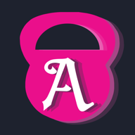
Launching October 15
Track your lifts. Build streaks. Create your own Agil. An iPhone app for what you lift and what you eat, with every feature in it from the first launch and nothing behind a paywall.
Free on the App Store ·
A tour
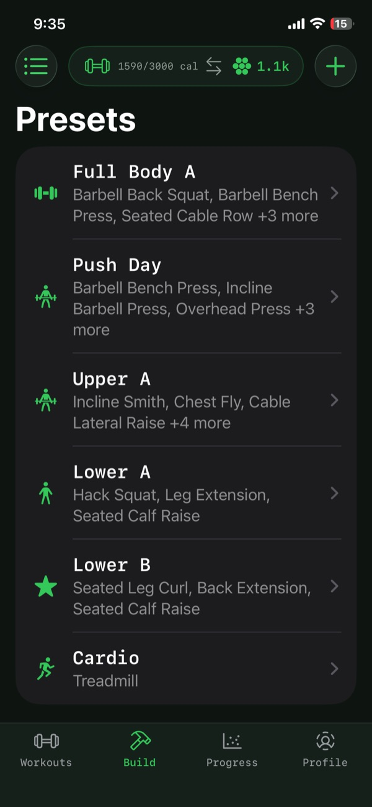
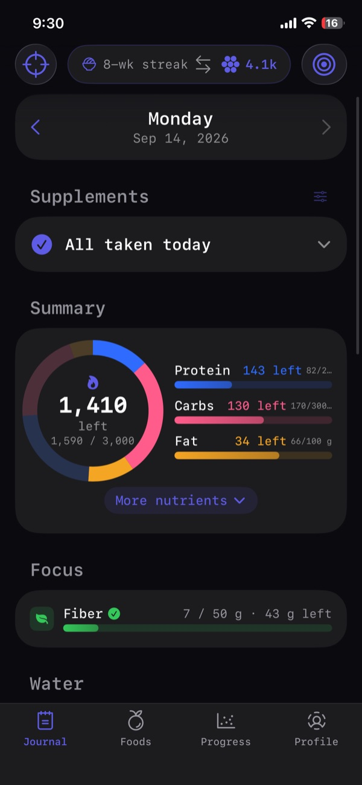
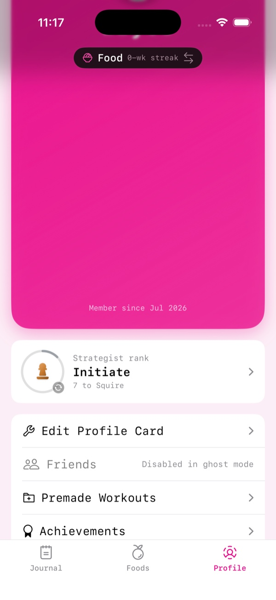
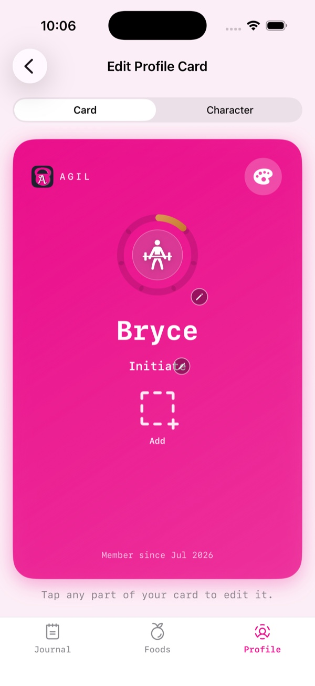
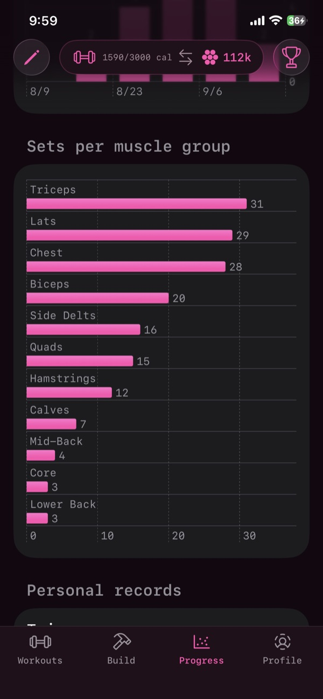
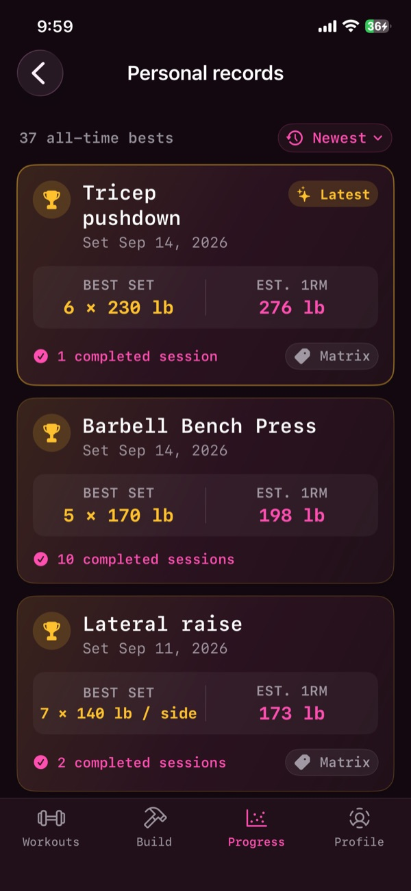
Agil is a lifting log and a food diary living in the same app. The pill at the top of the screen tells you which side you're on, and keeps one number from the other side in view: today's calories while you train, your lifting streak while you log lunch.
Tap it and the whole app flips. New tabs, same account, same coins. Your training and your eating finally live one tap apart, instead of in two apps that never talk to each other.
The more consistent you get, the more it pays. Every distinct day you train in a week climbs the ladder — 10, 20, 40, 80, up to 100 coins. Reset every week.
Coins buy themes, card styles and avatars.
Ghost Mode is the default, and it means what it says: everything stays on this device. Private, fast, and yours alone. Turn on Friends and the only thing that ever leaves is your profile card. Never a workout, never a meal.
Save the sessions you actually run as presets, like push day, lower B or cardio, and start any of them in a tap. Or open a blank session and fill it in as you train. No inspiration today? The premade catalog has whole sessions ready to add, built by hand by our team here at Agil. No AI.
Log reps and weight set by set, keep per-exercise notes and target rep ranges, and run the rest timer between sets. It still alerts you with the phone locked.
Build a character, pick a card style, showcase the badges you care about. The shop rotates daily, and everything in it is cosmetic. Nothing you can equip changes what the app tracks.
Log meals against calorie and macro goals, with fiber, sugar and sodium tracked alongside protein, carbs and fat. Pick a focus nutrient and it gets its own row, check off the day's supplements, and log water as you go.
Can't seem to remember your creatine? Agil's got you covered.
Charts and trends from everything you've logged: training volume over time, and sets per muscle group, so a lagging body part shows up as a short bar instead of a hunch. It all comes from what's on your phone, and it stays there.
Each lift keeps its best set and an estimated one-rep max, with the date you set it and how many sessions it took to get there. Unilateral lifts are tracked per side rather than averaged into one number.
The Strategist ladder runs pawn to king. It climbs on showing up, so it rewards the part of training that's actually hard.
The Strategist ladder
Your rank climbs on consistency, and every rank dresses your profile card a little louder: a new ring, a new piece, room for more badges. It's the one thing friends see, so it's the one thing worth showing off.
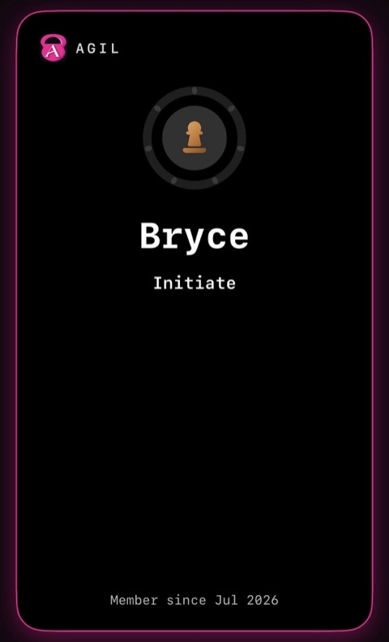
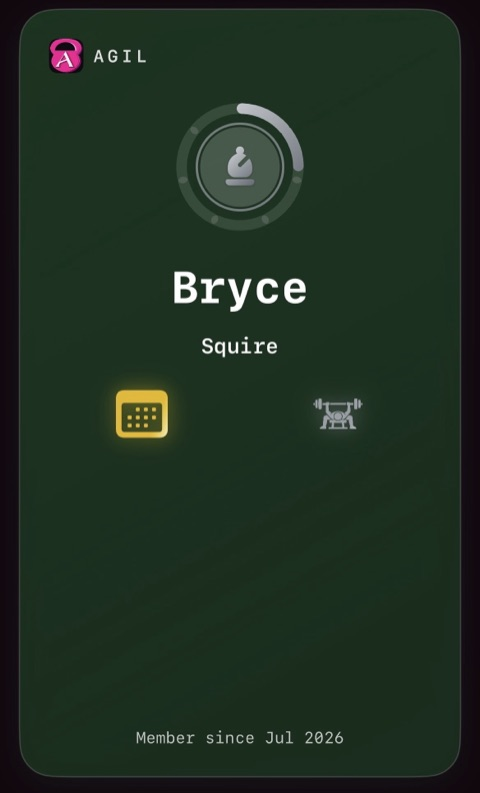
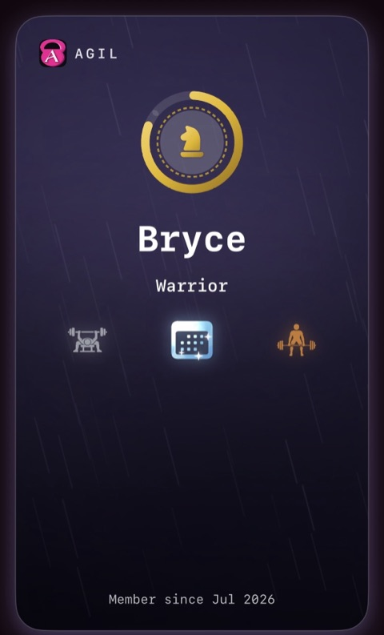
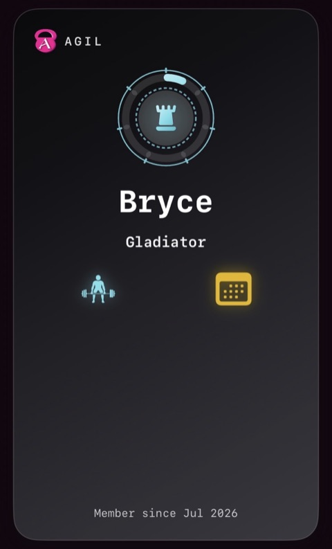
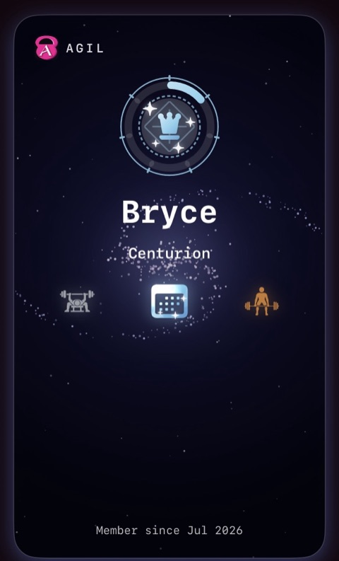
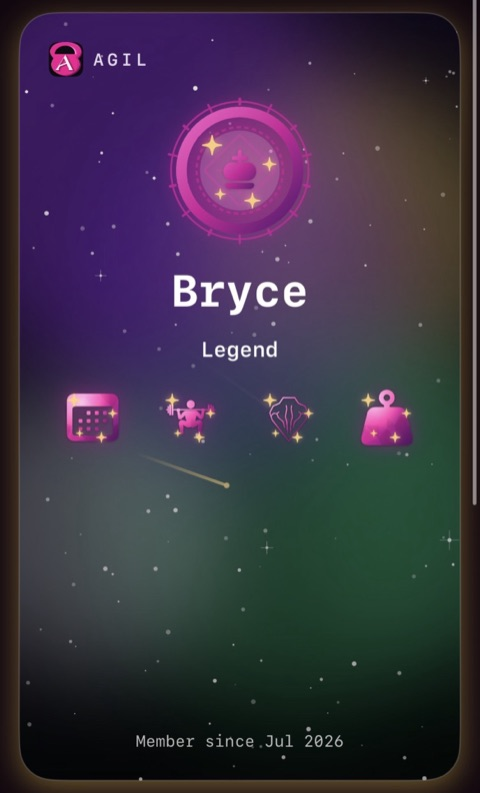
And the rest
Point the camera at a barcode and the food comes back with its full nutrition breakdown, sourced from the Open Food Facts database. Anything it doesn't know, you can add by hand and keep in your own library.
Badges land quietly and wait for you in a paged book, sealed until you open them. Thresholds are calibrated to you when you first set the app up, so they mean something whatever you're lifting.
Today's calories and your focus goal on the home screen, drawn in whatever theme the app is currently wearing.
Share a five-character friend code. With this you can share recipes, workouts, or just an exercise you're trying.
Make it yours
A theme sets the accent, the background, the card color and the typeface, everywhere at once. Classic ships free and follows your phone's light and dark setting; the rest are unlocked with coins.
Classic · free
Midnight
Deep Sea
Sunset
Leaf
Woods
Agil got built because every fitness app I tried put the useful half behind a subscription, or all of the workouts and progression was tracked by AI. With Agil, I could write my vision into it: always free software that grows with you without selling your data.
Your training data isn't the product either. Workouts, food, water and bodyweight stay in the app's own storage on your phone unless you deliberately leave Ghost Mode, and even then, all that leaves is your profile card. The privacy policy spells out exactly what that includes.
For the curious
Written by one person — a SwiftUI app and a Rust service, no framework scaffolding underneath either of them.
SwiftUI, iOS 16.1 and up. The project is generated from a
project.yml with XcodeGen rather than a checked-in
.xcodeproj, so the target graph is reviewable in a diff.
A theme is a Codable struct of hex strings, so custom themes
persist as JSON like everything else. Adaptive themes resolve to a dynamic
UIColor that switches with the system appearance, and the
typeface rides along on the theme via one root
.fontDesign() that the whole view tree inherits.
One type touches the disk. Everything is Codable JSON written
with a schema version wrapped around it, so migrations are possible later
without corrupting existing saves. The widget reads today's numbers out of
a shared App Group.
The daily rotation is computed offline from a date seed, so every user sees the same featured items on the same day with no server round trip and no way for the app to phone home about what you're browsing.
Rust on Axum with Diesel over SQLite. It serves the shared profile cards and the friend graph, and proxies food lookups to Open Food Facts as a read-through cache so the same barcode is only ever fetched upstream once.
There is no email, no password and no user table. A device generates a random UUID and a 256-bit secret held in the Keychain; the server stores only the SHA-256 of that secret and trusts the first write to claim the id. Reads of a card are public, writes must present the key.
A hand-rolled per-IP token bucket, one bucket per route class, so hammering food search can't lock out card sync. The bucket map sweeps itself so it can't become the memory-exhaustion surface it was meant to prevent. Friend requests get a separate per-user daily quota that counts attempts, not successes, to bound code enumeration.
Hand-written HTML and CSS with no build step and no framework. The scroll
tour is anime.js, vendored
as a file rather than pulled from a CDN, and it drives one class on
<html>, everything it does is additive, so the
page is complete without it.